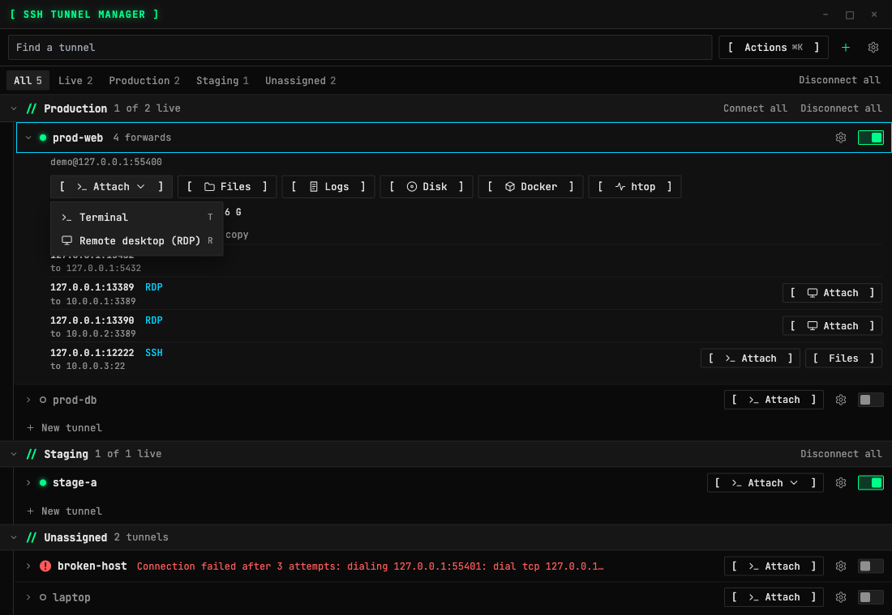
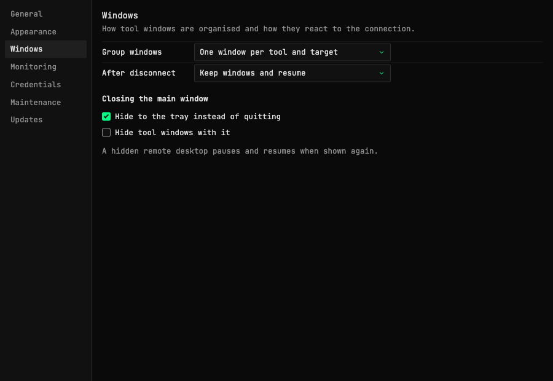
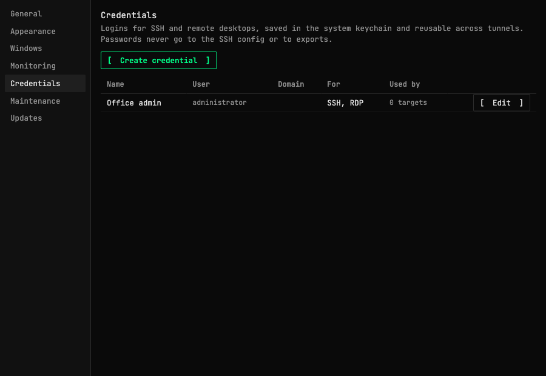
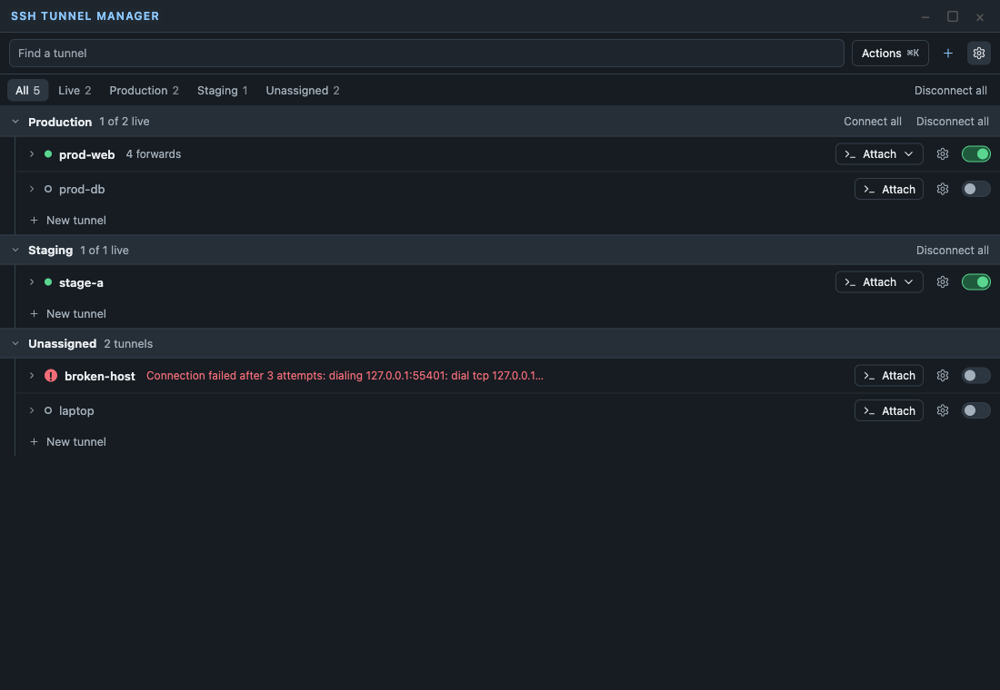

Separate tool windows and a new tunnel list
Tools now open in their own windows, and the main window became a short list. The app also moved to Wails 3.
A list with room to breathe
A tunnel is one row: status, name, Attach and a switch. Its address, tools and forwards appear when you expand it, a failed tunnel shows a red ! and the reason in the row, and a tunnel's colour tints its row.


Attach
Attach opens a session. It goes straight to the terminal, and shows a menu only when the tunnel also has a remote desktop. A forward of type RDP or SSH has the same button, also with Portless, so every server behind a bastion opens in its own window.
Separate windows
Terminal, files, Docker, htop, disk, logs and remote desktop each open in a native window that can leave the main window. Several terminals on one target are tabs. Grouping, what windows do after a disconnect and closing the main window are all settings.


Saved logins and a shared clipboard
Name a login once and assign it to any number of tunnels and forwards, for SSH and remote desktops. A tunnel can now log in with a saved password, sent only to a server with the host key seen on the first connection. The remote desktop login form offers every saved login and can save a new one. Secrets stay in the system keychain. The remote desktop shares the clipboard, with a direction per tunnel.



Settings per tunnel
Each tunnel has a settings window for its connection, forwards, credentials, row, monitoring intervals and disconnect behaviour, with one Save for all of them. A tunnel can set a Portless suffix, so dev gives name.dev.ssh-local. Settings, Maintenance shows the app log. Docker and Disk show cards, with details one click away. Docker refreshes by hand by default and its environment variables stay closed until you open them.

Terminal and Graphite themes
The green Terminal look stays the default. Graphite is a quieter option under Settings, Appearance. The font now ships with the app instead of loading from Google Fonts.


Keyboard
⌘K or Ctrl+K finds tunnels and runs actions. In the list, arrows or j and k move, Enter expands, Space connects, and letters open tools.

How to use it
- Click a tunnel to expand it, and use its switch to connect.
- Add a tunnel or a group with the
+button, or with New tunnel at the end of a group. - Open Settings with the gear button at the top, and a tunnel’s settings with the gear in its row.
- Press
⌘KorCtrl+Kto find anything.
Known limits
- Saved RDP logins are not carried over: a remote desktop asks once, and the old entries stay unused in the keychain.
- The clipboard was tested on macOS against GNOME Remote Desktop on Ubuntu: text, pictures and files cross both ways. xrdp 0.9.12 does not exchange pictures, because the client prefers a format (DIBV5) that this server does not implement. Windows as the server has not been tested.
- A saved SSH password was tested against OpenSSH. Tunnels that use only a key or agent still do not check the host key.
- Windows and Linux had an automatic start-up check only. Remote desktop on WebView2 and WebKitGTK and with Windows as the server is still untested.
- Linux needs GTK 4 and WebKitGTK 6.0, so a recent distribution.
- VNC logins can be saved, but there is no VNC client yet.
- A Portless suffix was tested in the settings and the config file. Resolving such a name on a real system was not.
- After 3 failed attempts nothing retries on its own, as in the previous beta.